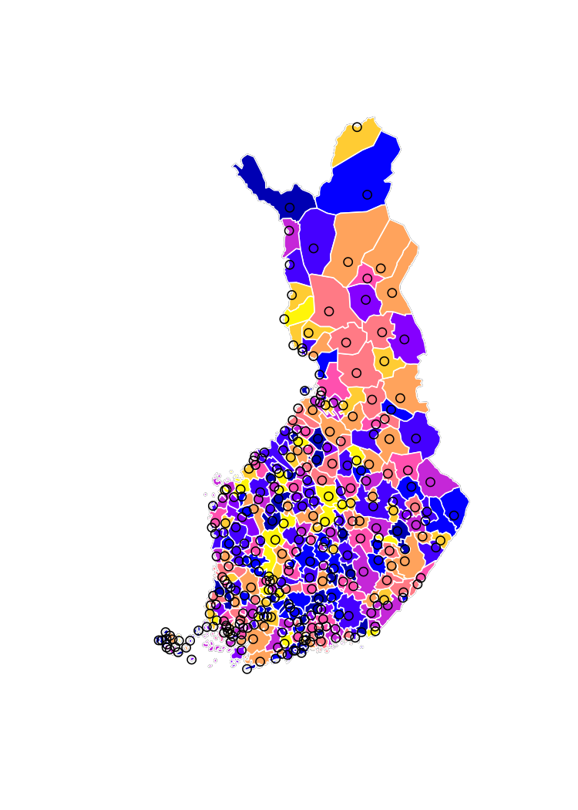
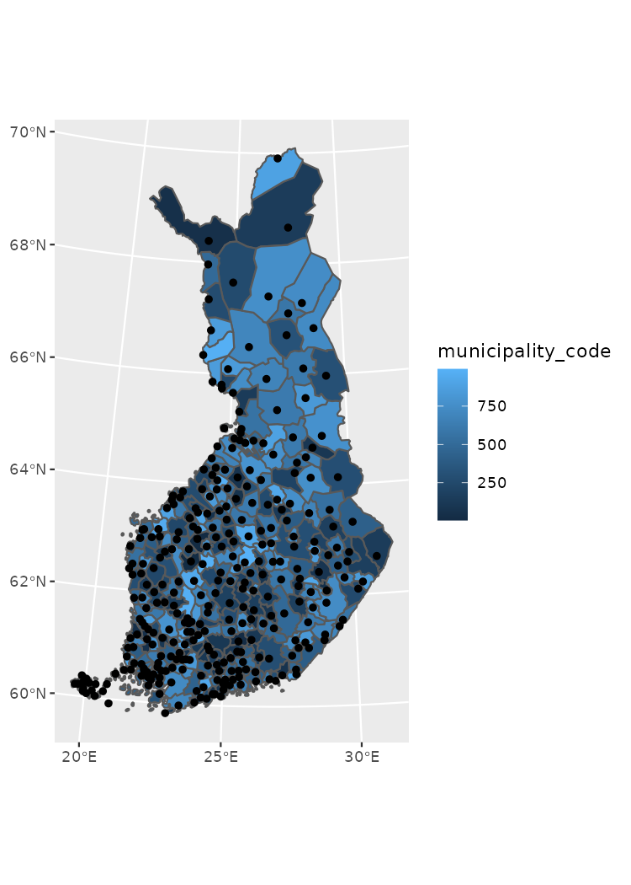
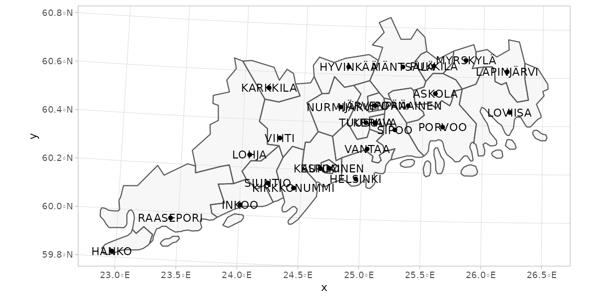
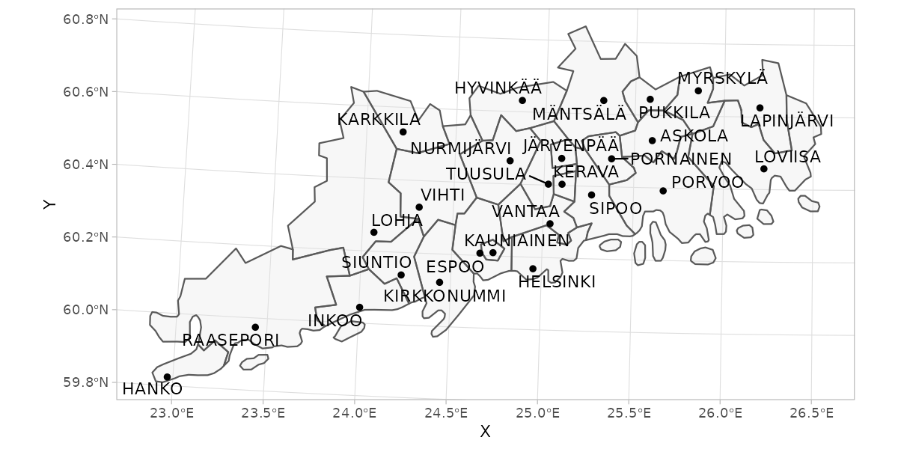
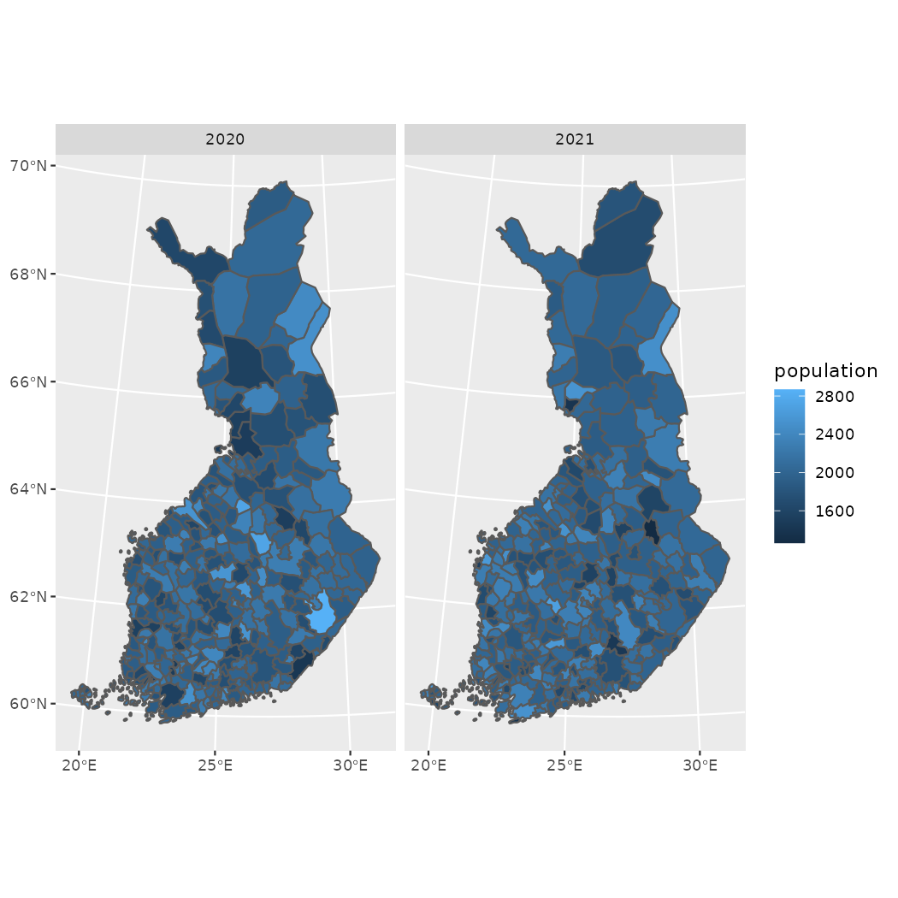
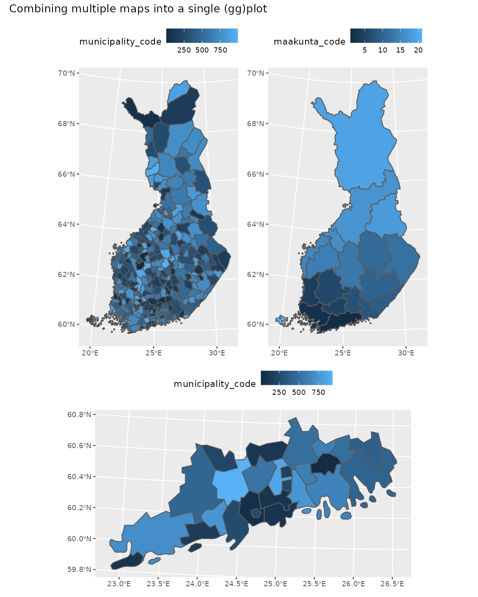

Making maps using geofi-package
Markus Kainu, Leo Lahti & Joona Lehtomäki
2021-03-29
geofi_making_maps.RmdInstallation
geofi can be installed from CRAN using
# install from CRAN
install.packages("geofi")
# Install development version from GitHub
remotes::install_github("ropengov/geofi")This vignettes gives an overview of different options for creating maps in R using the data from geofi-package. Vignette is divided in three sections: R-packages for static maps, static maps using ggplot2 and interactive maps. But we begin with the datasets we want to plot.
If you want more detailed explanation of how to plot sf-objects take a look at vignette 5. Plotting Simple Features.
Datasets
Lets start with latest municipality division from get_municipalities() with is a POLYGON data and with POINT data of municipality_central_localities that is shipped with the package.
library(geofi)
polygon <- get_municipalities(year = 2021, scale = 4500)
point <- geofi::municipality_central_localities
# municipality code into integer
point$municipality_code <- as.integer(point$kuntatunnus)
library(sf) # for spatial data operations laterThey both come in same CRS EPSG:3067 and can be plotted together without any further manipulation.
R-packages for static maps
There are two main technologies for creating static graphics in R: base and ggplot2. Both can be used to plot spatial data ie. to create maps. In addition, tmap : thematic maps in R is a great tool if you want to dig deeper into cartography in R.
base
# dev.off()
plot(st_geometry(polygon["municipality_code"]))
plot(polygon["municipality_code"], add = TRUE, border="white")
plot(st_geometry(point["municipality_code"]), add = TRUE, color = "black")
ggplot2
library(ggplot2)
ggplot() +
geom_sf(data = polygon, aes(fill = municipality_code)) +
geom_sf(data = point)
tmap
library(tmap)
tm_shape(polygon) +
tm_polygons("municipality_code") +
tm_shape(point) +
tm_symbols(col = "black", scale = .5) 
As I am only fluent in using ggplot2 the the more complex examples are using ggplot2-package.
Static maps using ggplot2
ggplot2-packages has three sf-class spesific functions: geom_sf plotting for points, lines and polygons, and geom_sf_text and geom_sf_label for labeling the maps. In the following examples we are using the Uusimaa region in Southern Finland.
library(dplyr)
polygon_uusimaa <- polygon %>% filter(maakunta_name_fi %in% "Uusimaa")
point_uusimaa <- point %>% filter(municipality_code %in% polygon_uusimaa$municipality_code)
ggplot() +
theme_light() +
geom_sf(data = polygon_uusimaa, alpha = .3) +
geom_sf(data = point_uusimaa) +
geom_sf_text(data = point_uusimaa, aes(label = teksti))
Label overlapping
geom_sf_label or geom_sf_text cannot control the overlapping of labels which is a common issue when mapping objects of various shapes and sizes. With ggrepel you can solve the problem though it requires a bit of spatial data processing with sf-package.
ggplot() +
theme_light() +
geom_sf(data = polygon_uusimaa, alpha = .3) +
geom_sf(data = point_uusimaa) +
ggrepel::geom_text_repel(data = point_uusimaa %>%
sf::st_set_geometry(NULL) %>%
bind_cols(point_uusimaa %>%
sf::st_centroid() %>%
sf::st_coordinates() %>% as_tibble()),
aes(label = teksti, x = X, y = Y))
Facetting and combining maps
Facetting is a useful way to present data on multiple variables covering the same region. This is useful approach if you have, lets say, data on same indicator from two different time points and you want to have separate maps for separate times points, but have a shared scale. Below I create a random data for two year titled population and plot the data using facet_wrap()-function.
pop_data <- bind_rows(
tibble(
municipality_code = polygon$municipality_code
) %>%
mutate(population = rnorm(n = nrow(.), mean = 2000, sd = 250),
time = 2020),
tibble(
municipality_code = polygon$municipality_code
) %>%
mutate(population = rnorm(n = nrow(.), mean = 2000, sd = 250),
time = 2021)
)
pop_data
#> # A tibble: 618 x 3
#> municipality_code population time
#> <int> <dbl> <dbl>
#> 1 5 1952. 2020
#> 2 9 2354. 2020
#> 3 10 1965. 2020
#> 4 16 1962. 2020
#> 5 18 1843. 2020
#> 6 19 1691. 2020
#> 7 20 2354. 2020
#> 8 35 1814. 2020
#> 9 43 1917. 2020
#> 10 46 1823. 2020
#> # … with 608 more rows
pop_map <- right_join(polygon, pop_data)
ggplot(pop_map,
aes(fill = population)) +
geom_sf() +
facet_grid(~time)
However, often the indicators you want to compare either have different values (shared scale not ideal), are aggregated differently or cover non-overlapping geographic region. The you may find patchwork useful as in the example below.
library(patchwork)
p_municipalities <- ggplot(polygon, aes(fill = municipality_code)) +
geom_sf() +
theme(legend.position = "top")
p_regions <- ggplot(polygon %>% count(maakunta_code), aes(fill = maakunta_code)) +
geom_sf() +
theme(legend.position = "top")
p_uusimaa <- ggplot(polygon_uusimaa, aes(fill = municipality_code)) +
geom_sf() +
theme(legend.position = "top")
(p_municipalities | p_regions) /
p_uusimaa + plot_layout(nrow = 2, heights = c(1,0.6)) +
plot_annotation(title = "Combining multiple maps into a single (gg)plot")
Aesthetics
Creating informative and aesthetically pleasing maps is always a challenge and there are no recipe for instant success. Colors are important and colorbrewer2.org can help with that. In ggplot2 you can use colorbrewer-palettes with scale_fill_brewer, scale_fill_distiller, scale_fill_fermenter -functions.
You may want to get rid of the grid as well as axis-labels and -titles.
ggplot(polygon_uusimaa, aes(fill = municipality_code)) +
geom_sf(color = alpha("white", 1/3)) +
scale_fill_fermenter(palette = "YlGnBu") +
theme_minimal() +
theme(axis.text = element_blank(),
axis.title = element_blank(),
panel.grid = element_blank(),
legend.position = "top"
) +
labs(title = "Municipality code",
fill = NULL)
Interactive maps
As for interactive maps Leaflet is not the only option. For exploring you datasets in almost any CRS you should to try out mapview. As for larger datasets, you are probably safer with WebGL based mapdeck.
Again, I am most experienced with leaflet so the following example is using leaflet. Leaflet default projection is EPSG:3857 or WGS84, also known as “Google Mercator” or "Web Mercator, and you have reproject your geofi data to plot it using leaflet.
polygon_wgs84 <- sf::st_transform(x = polygon, crs = "+proj=longlat +datum=WGS84")
point_wgs84 <- sf::st_transform(x = point, crs = "+proj=longlat +datum=WGS84")
library(leaflet)
# lets create a palette for polygon fill (municipality codes)
pal <- leaflet::colorNumeric(palette = "Blues",
domain = polygon_wgs84$municipality_code)
# labels for localities
labels <- sprintf(
"<strong>%s</strong> (%s)",
point_wgs84$teksti, point_wgs84$kuntatunnus
) %>% lapply(htmltools::HTML)
# popup for polygons
popup <- sprintf(
"<strong>%s</strong> (%s)",
polygon_wgs84$municipality_name_fi, polygon_wgs84$municipality_code
) %>% lapply(htmltools::HTML)
leaflet(polygon_wgs84) %>%
addProviderTiles(provider = providers$CartoDB.Positron) %>%
addPolygons(fillColor = ~pal(municipality_code),
color = "black",
weight = 1,
opacity = 1,
dashArray = "3",
fillOpacity = 0.4,
popup = popup,
highlight = highlightOptions(
weight = 2,
color = "#666",
dashArray = "",
fillOpacity = 0.4,
bringToFront = TRUE)
) %>%
addMarkers(data = point_wgs84,
label = labels,
clusterOptions = markerClusterOptions(),
labelOptions = labelOptions(opacity = .7,
style = list("font-weight" = "normal",
padding = "2px 4px"),
textsize = "12px",
direction = "auto"))